Unity 실제 플레이 모드에서 촬영한 게임 화면입니다. 보스 선택·플레이어 위치·무적·촬영 구도를 통제한 검수 영상입니다. 보스 30fps / 매운맛 15fps. 상세 수치와 검수 범위는 검수 기록에 정리했습니다.
대장
중앙 세로축 8방향 회전 · 껍질·테두리·배·줄기가 함께 회전
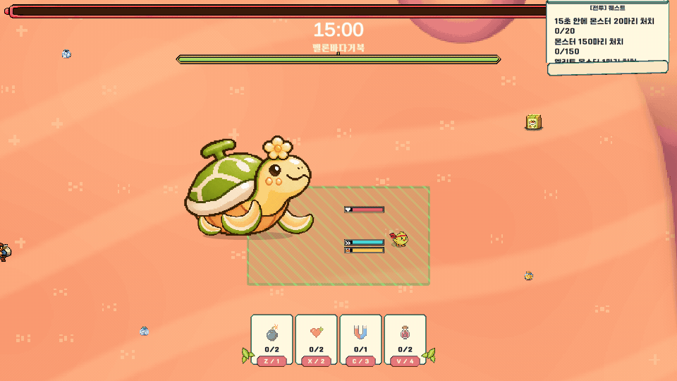
대장
좌우 방향에 맞춘 프레임 순서 · 동일한 표시 크기와 바닥 접점
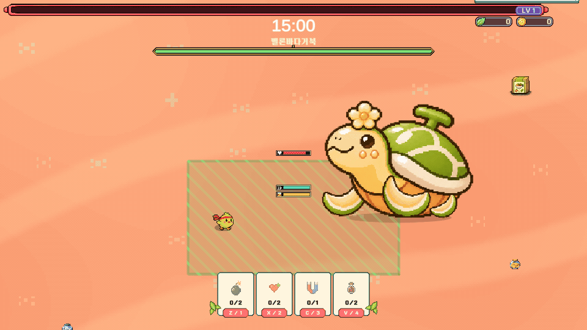
구강
같은 크기 10개 · 이전 배치 연속 선택 방지
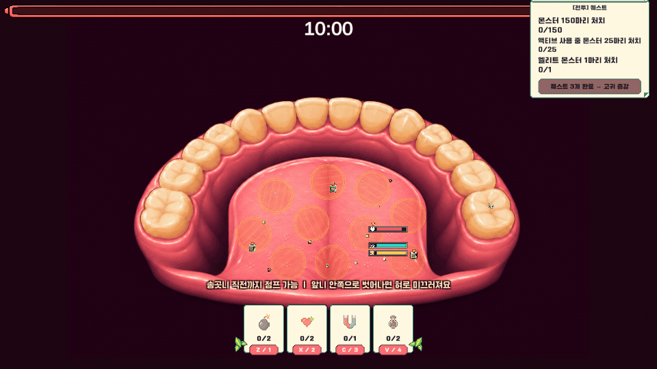
구강
실제 화상 판정과 안전 통로
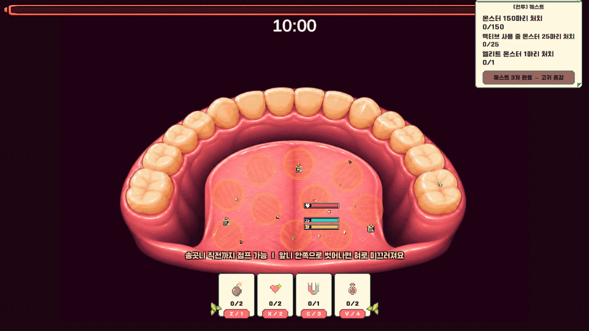
위장
둥근 연속 토출 · 따뜻한 명암 · 안정된 착지
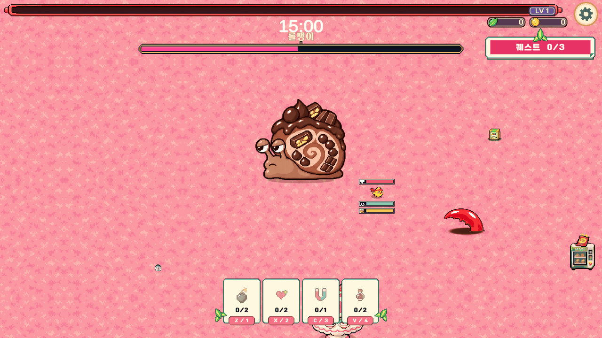
위장
바닥이 비치는 액체와 기포
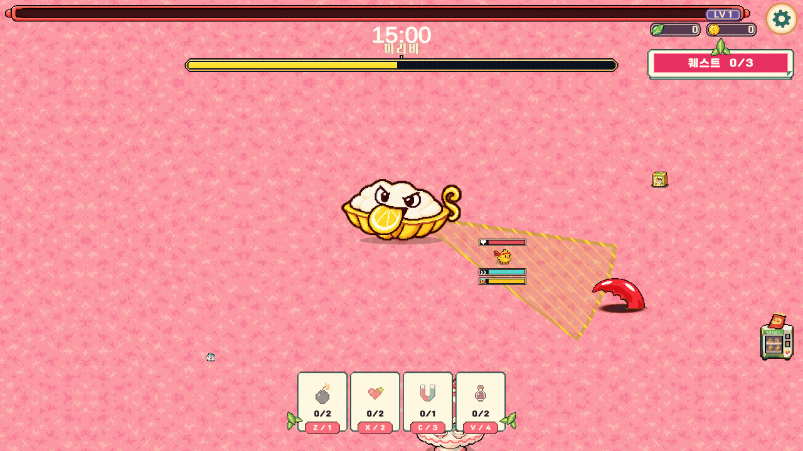
위장
기존 피해 범위와 시간 유지
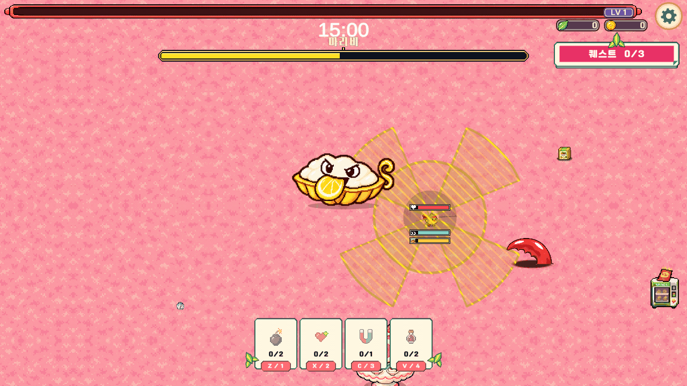
대장
발끝 착지와 늦게 따라오는 몸체
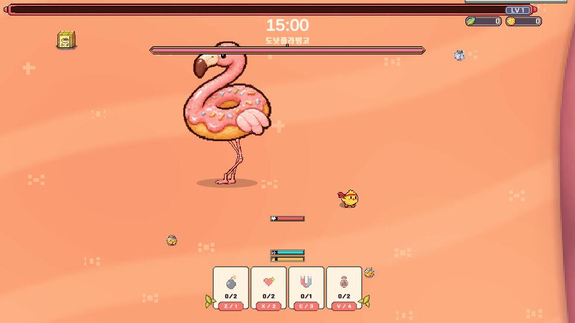
대장
첫 타격과 지면 거품 연결 · 착지 거품은 추가 피해 없음
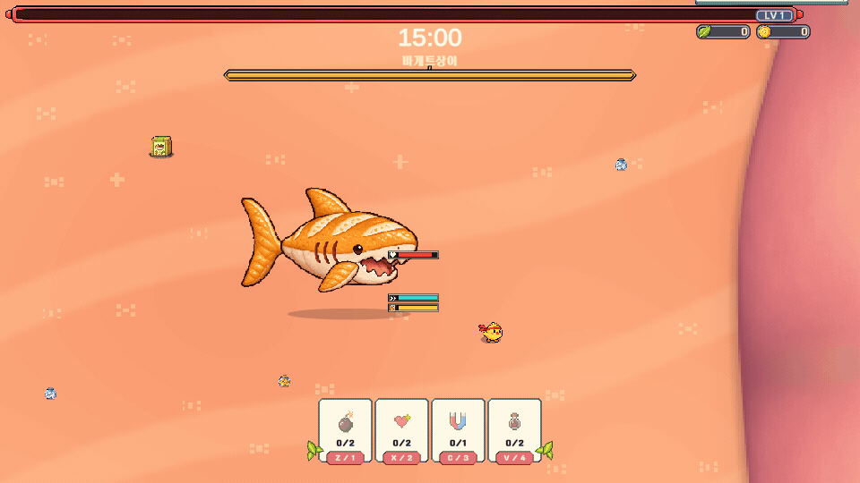
대장
배 접촉 → 파동 → 탄성 복귀
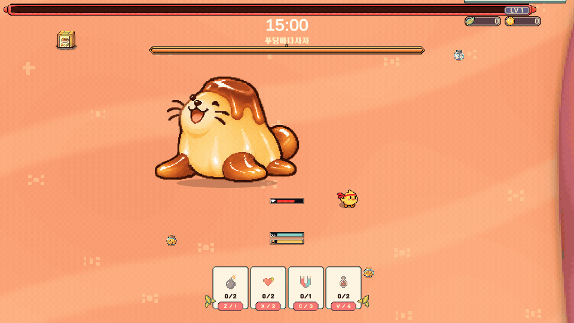
대장
실제 밤 특수몹의 체력·개체 유지 · 다시 출격
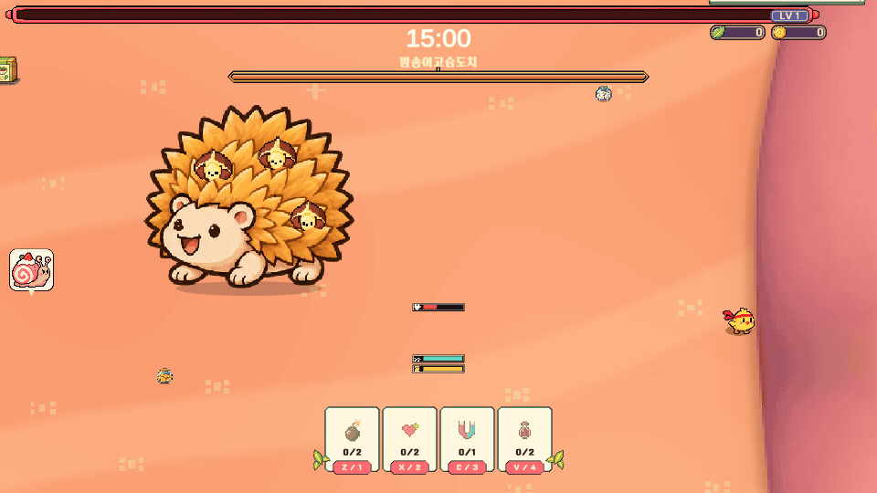
대장
지느러미 끝과 발사 시점 연결
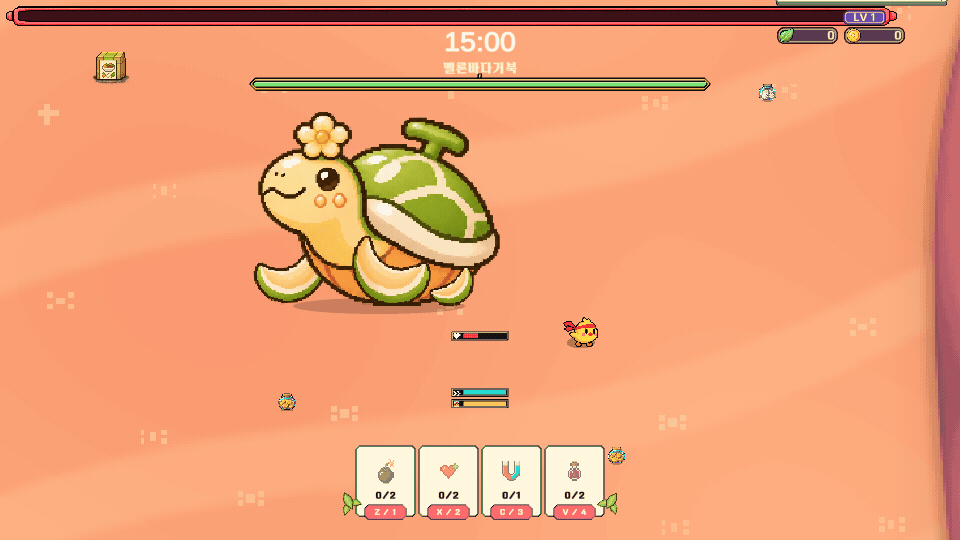
대장
머리 철수 → 문 닫힘 → 충격
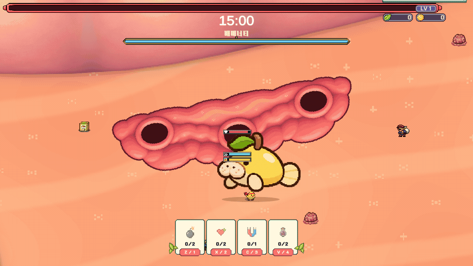
위장
접촉 순간 압박과 빵가루
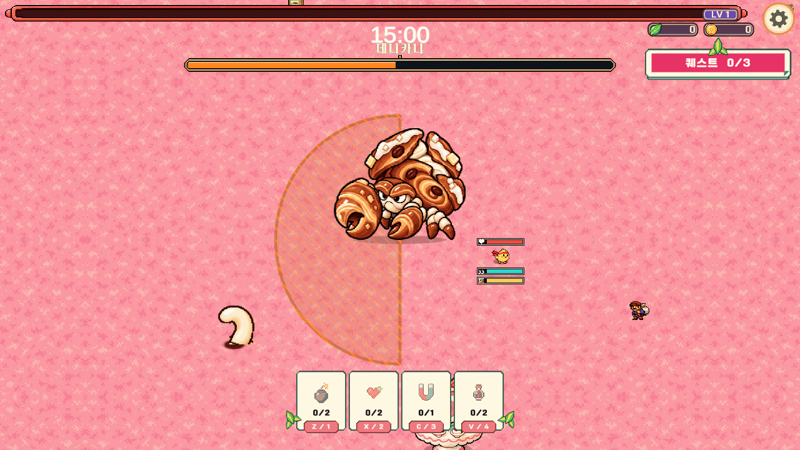
위장
몸에서 뿔끝으로 이어지는 충전
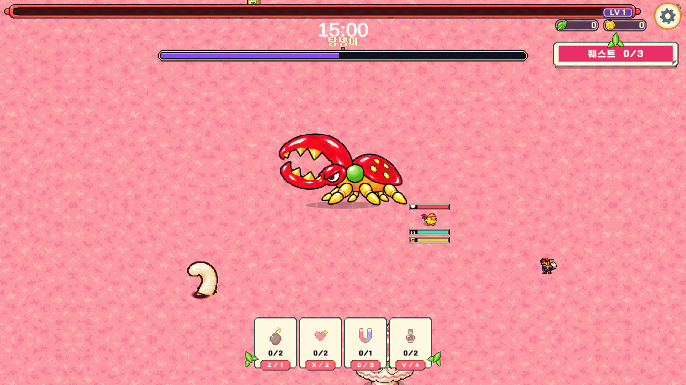
위장
기존 면과 연결한 관성 복귀
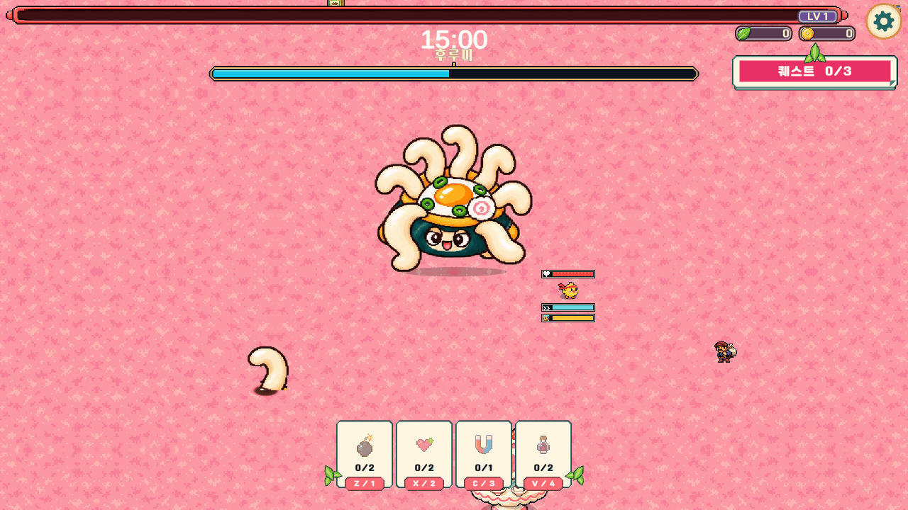